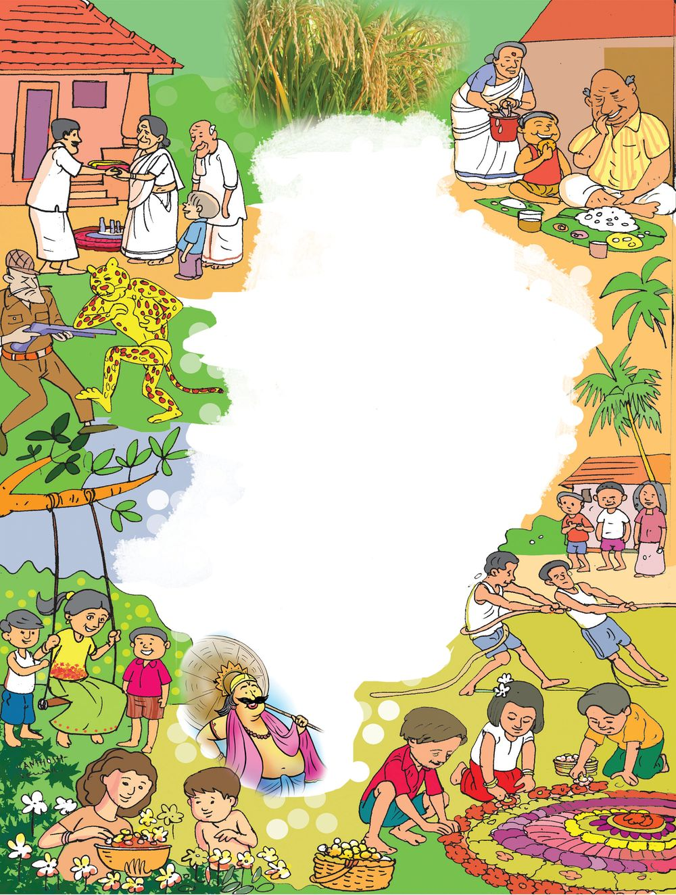
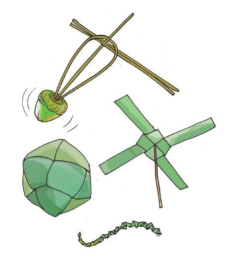
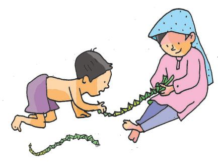
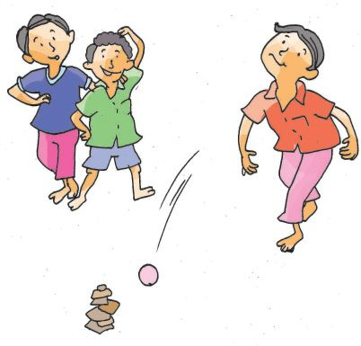
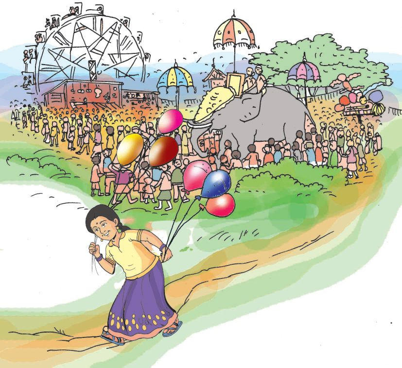
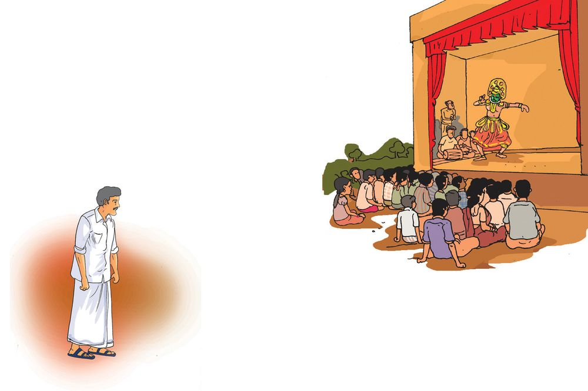
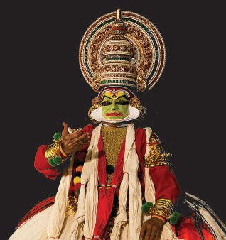
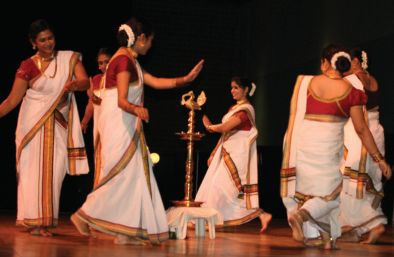
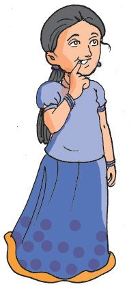

Nileena’s school is celebrating Onam today.
She left for school along with her father.
Parents and the public had already reached the school. They
started the preparation of the feast and were busy with other
arrangements. Nileena and her friends had to make the
‘Pookkalam'.
What
arrangements do you make? What programmes are
organised?
Try to write them down.
47
Land of Arts
Don't you celebrate Onam at school?
Page 48
Figure fig_ch05_p048_01 (Page 48)

Figure fig_ch05_p048_02 (Page 48)
Celebrating togetherness
Onam is our national festival.
Malayalees all over the world
celebrate Onam. It is believed that
Mahabali, the just king who ruled
Kerala, visits Kerala once in every
year to see his subjects. Onam is
also a harvest festival.
After the ‘Onasadya,’ Nileena and
her friends engaged in various
‘Onakkalikal’.
Why is it said that Onam is a
celebration of togetherness?
Environmental Science
48
48
Page 49
Figure fig_ch05_p049_01 (Page 49)

Figure fig_ch05_p049_02 (Page 49)

Figure fig_ch05_p049_03 (Page 49)

Figure fig_ch05_p049_04 (Page 49)
Folk games
Don't you like playing games? Folk games are the games played in
a locality for a long time. Mention the names of folk games you know.
Let's now try to know about one such folk game.
Lahori
Lahori is played between two teams. This
is how it is played. Take seven pieces of
tiles or similar flat objects. This is called
a ‘chillu’(slab). Arrange the slabs one
above the other with the smaller pieces on
top of the bigger ones. Draw a circle
around this. Mark another line a few feet
away from it. Standing on this line, throw
a ball onto the slabs. If the slabs scatter,
the team which makes it fall tries to
rearrange it. While arranging, the other
team tries to hit the players with the ball.
If they arrange the slabs without being hit,
they win a ‘Lahori’. Each player has three
chances to throw the ball. If the other
team catches the ball, the player who
threw the ball will be out of the game.
Think of a folk game in your place and
describe how it is played.
We make several articles to play folk
games.
What articles can be made using the
coconut leaf?
Can you make similar articles?
Make them and organize an exhibition.
49
Land of Arts
ball
Page 50
Figure fig_ch05_p050_01 (Page 50)

Figure fig_ch05_p050_02 (Page 50)
Festival scenes
Nileena’s diary
Sun Mon
Environmental Science
6
13
20
27
7
14
21
28
Tue
1
8
15
22
29
Wed Thu
2
3
9
10
16
17
23
24
30
Fri
4
11
18
25
Sat
5
12
19
26
2015
September
26
Went to see the festival with mother today. Palm leaf
festoons hung on roadsides. Mango leaves between them.
The big ‘pandal’ in the temple yard. Bulbs of different
colours glowing. The procession with elephants with the
‘Varnakuda’, 'Nettipattam' and ‘Venchamaram’.
'Chendamelam' at its peak..............................................................
...........................................................................................................
What other such scenes have you seen? Make notes.
50
Onam is a period of boat races.
How beautiful it is to see people
sitting in different boats, singing
the ‘Vanchipattu’ and rowing
along! The excitement and
togetherness of a group can be
seen in the boat race.
Aren’t there festivals in your locality
also?
Prepare a note on the important ones.
Prepare a festival calendar including the festivals of your place and
their special features.
Month
Festivals
Features
The festivals and celebrations are different from place to place.
They are also occasions of togetherness.
Art forms make celebrations more attractive.
................ Cultural programmes are conducted during festivals every
year. Last year it was ‘Kathakali’. This year it is ‘Ottanthullal’. It was
for the first time that I saw Ottanthullal. My father told me many
interesting facts about Ottanthullal..............................................................
....................................................................................................................................................................
26
51
Land of Arts
2015
September
Page 52
Figure fig_ch05_p052_01 (Page 52)

Figure fig_ch05_p052_02 (Page 52)

Figure fig_ch05_p052_03 (Page 52)

Figure fig_ch05_p052_04 (Page 52)

Figure fig_ch05_p052_05 (Page 52)
It was Kunchan Nambiar
who founded ‘Thullal.’ This art
form mocks at the evils of society
with a pinch of humour.
Thullal is of three types- Ottan
thullal, Parayan thullal and
Seethankan thullal.
Father also
told me about
Kathakali
Kathakali is an art form of Kerala. In
Kathakali, dance, acting, music and the
mudras are equally important. Kathakali can
be learned only through continuous practice.
Kathakali is known as the ‘King of arts’.
Many of the art forms of our country are
part of rituals. Let us try to familiarise some
of the art forms.
Environmental Science
Thiruvathirakkali
Women perform dance around a lighted
lamp on the day of 'Thiruvathira' in the
month of 'Dhanu'. During the
Thiruvathirakkali,
women
wear
traditional Kerala costumes, decorate
their hair with 'Desapushpam' and clap
their hands in tune with specially tuned songs.
52
Kolkali
Kolkali is an art form where the performers
dance in a circle. They sing together and
dance to the rhythm of the song, beating
the sticks in tune with the song.
You are now familiar with some art forms. Aren’t there such art
forms in our place also? Try to find facts about the art forms in your
locality and write about their peculiarities.
Look at the pictures. They are various art forms of our state. Collect
details about these art forms and record them in the environment
diary.
Margamkali
Koodiyattam
Theyyam
Dufmuttu
Oppana
Kummatti
Mohiniyattam
Padayani
Collect pictures of other such art forms and prepare an album.
53
Nileena and her friends came to see an exhibition of painting and
sculpture. The beauty of the paintings and sculptures attracted
them a lot.
Painting and sculpture are also
different types of art forms. Our
state has a rich tradition of painting
and sculpture. The world famous
painter and artist Raja Ravi Varma
belongs to Kerala.
Environmental Science
Collect copies of the
paintings of Raja Ravi
Varma.
Collect copies of great paintings and
conduct an exhibition in your class.
54
The school is preparing for the Arts festival. Thiruvathirakkali and
Oppana are among the items. Nileena likes singing songs. Nileena
is taking part in Classical Music, Light Music and Mappilappattu.
Let us try to find out some facts about music as we have a great
tradition of it.
Irayimman Thampi
“Omanathinkal Kidavo
Nalla Komalathamara puvo”
Haven’t you heard this famous song often?
This song was written by Irayimman
Thampi. He made valuable contributions to
literature and music.
Swathi Thirunal
Swathi Thirunal was a king,
well – versed in music. He has
written
more
than
five
hundred works in Malayalam,
Sanskrit, Hindi, Tamil, Telugu
and Kannada.
Folk songs
The knowledge and experiences gathered through generations
are seen in folk songs.
55
Land of Arts
Folk songs are songs of a locality that are passed from one
generation to another. Folk songs are of different types: those
related to farming, handicrafts, entertainments, customs,
lifestyles etc.
Collect other folk songs
and present them in class.
Vadakkanpattu
Environmental Science
‘Vadakkanpattu’ are songs that are great
contributions to the Malayalam language.
There were ‘Kalaris’ to offer military training
when the country was ruled by the
‘Naduvazhi’. When there were conflicts or
problems that could not be solved, people
challenged each other to ‘ankams’ (duels).
Skilled ‘Ankachekavars’ (warriors) were
appointed on both sides. 'Vadakkanpattu' are
the songs describing the valour and
greatness of famous warriors like Thacholi
Othenan, Unniyarcha etc.
Mappilapattu
‘Mappilapattu’ are poetic forms with unique features. It was
Moiyeenkutty Vaidyar who popularised the Mappilapattu in Kerala.
56
identifies the art forms of Kerala and lists them.
prepares and presents notes on the festivals of Kerala.
identifies and explains that art and festivals reflect the culture
of Kerala.
collects folk songs.
elaborates the music tradition of Kerala in a simple way.
lists out folk games and makes essential sports articles.
Let us assess
1. Write note on the art forms you identified.
2. Make a list of local festivals.
3. Which are the art forms that originated in Kerala?
4. Match the following.
King of arts
Music
Art form with humour
World famous painter and artist
Swathi Thirunal
Ottanthullal
Raja Ravi Varma
Kathakali
Collect pictures of art forms and exhibit them in school.